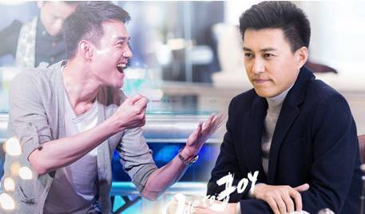

Time: 19:30-21:30, Friday,May 6.
Venue: Room B204, New Main Building, Beihang University.
Right or Wrong
Toastmaster: Sarah
Recently, a college student’s death aroused a big condemning wave towards China's biggest search engine company named Baidu who earns money by providing a part of fake information on its best SERP positions. And a senior HR of the foreign-funded enterprise, named Fan Shengmei from a TV scenario called Ode to Joy(欢乐颂)，did something she herself resented to satisfy her vanity squeezing into the noble class. Here comes the question. Should we do things against our conscience or moral code in order to reach our goals? Are the things that we did right or wrong?
Tonight we are gonna hear different opinions!

Table topic master: Han
Our handsome and brilliant table topic master Han has prepared some relative and interesting questions for our guests. Are you willing to stand up and get rid of your shyness? Are you willing to get personal progress on your oral English? Are you willing to show up your unique opinions to Right-or-Wrong questions to impress everyone? Beihang TMC always opens her arms waiting for you. By the way, it’s free!
Competent Communication Projects (CC)
First Communication in Foreign Language (CC-1)
Speaker: Channing
Everyone has his/her first time communicating with another guy in a foreign language, it might be an interesting memory. Of course, different people has diverse experiences. Let’s see what Channing is going to share with us!
The Open Mode of Psychology (CC-5)
Speaker: Joy
Speaking of psychology, a lot of people have misunderstandings. We all know that psychology can help people solve psychological problems and understand each other better in their daily life. However, there is still part of psychology that we don’t know and Joy is going to bring us something new! Let’s hear what Joy is going to say tonight!
What is Toastmasters?
Toastmasters International (TI) is a nonprofit educational organization that operates clubs worldwide for the purpose of helping members improve their
communication, public speaking, and leadership skills.
You can find us by the following map of Beihang University.
Any questions call Sarah:15801266526

https://mp.weixin.qq.com/s/uHjC2ZWEznyTGX7V6F4_7A
本页为抢救式本地归档，图文已永久保存。